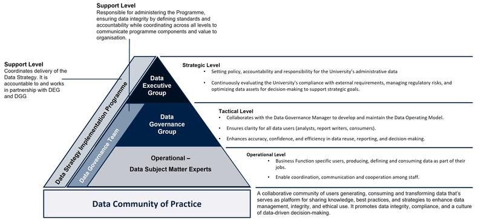
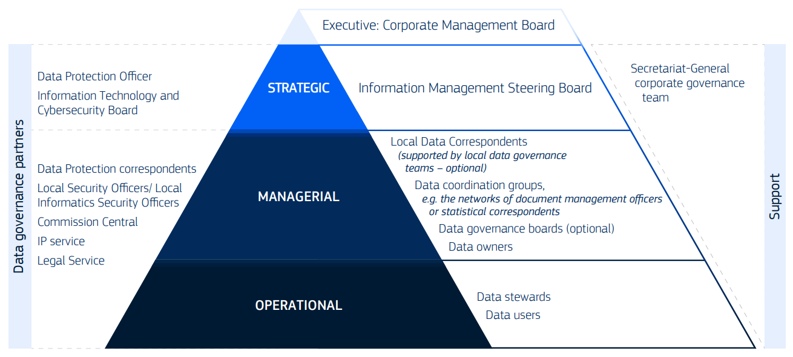

Session 9
Global landscape of human resources for data
![]()
Model of roles and responsibilities for data - University of Oxford

Data Executive Group
-
Offers overarching strategic guidance and decision-making by:
Establishing policies, accountability, and responsibility for the University’s administrative data.
Continuously evaluating the University’s capacity to meet external obligations and minimise regulatory and statutory risks, while maximising the value of its data for informed decision-making and supporting strategic goals.
Data Governance Group
-
Oversees governance policies and ensures they are followed by:
Making sure the Data Operating Model and core data governance and quality activities give clear guidance to all data users, whether they analyse, report on, or consume data.
Supporting improved accuracy, confidence, and efficiency in data reuse, reporting, and decision-making.
Data subject matter experts
-
Handle data in their daily roles such as creating, using, storing, defining, managing, or deleting it. They are responsible for:
Reporting data governance progress and challenges to the Data Governance Team.
Ensuring data integrity and security, and adhering to organisational policies and regulatory requirements.
Applying best practices, maintaining data quality, addressing data issues, and supporting accurate, timely reporting.
Promoting collaboration between business and technical teams to support effective, data-informed decision-making.
Model of roles and responsibilities for data - OECD

Group roles - Information Management Steering Board
Standing subgroup of the Corporate Management Board.
Helps the Board supervise the implementation of the Commission’s strategy for managing data, information, and knowledge, with support from the Information Management Team.
Group roles - Data coordination groups
Develops, implements, monitors, and promotes data policies within their domain, in alignment with corporate data governance.
Creates and encourages the use of common metadata, controlled vocabularies, and data standards for their data area.
Provides guidance, reports progress, and escalates issues to strategic leadership when necessary.
Links business and policy needs to data assets, and identifies data gaps at corporate, interservice, or local levels.
Works with other groups and governance partners to support or implement specific data policies and actions.
Offers support and sharing expertise with data owners, data stewards, and other staff within their domain.
Group roles - Data governance boards
Supports the effective implementation of corporate data governance and policies.
Ensures local data policies are created and aligned with corporate guidance.
Monitors their department’s maturity in data governance, management, and use.
Promotes data governance, data use (including reporting, analytics, and AI), and data literacy at all organisational levels.
Advises on the human and financial resources needed to develop, implement, and maintain data governance and data policies.
Individual roles - Local data correspondent
Acts as the main point of contact for data management within their DG/service.
The role may be shared or delegated to multiple people based on the department’s size and needs.
DGs/services may establish local data governance teams to help implement data governance and data policies, providing support to the LDCs.
Individual roles - data owner
Data owners are managers or staff appointed by strategic leadership to take responsibility for a specific data domain or data asset.
The term refers to business owners of data, not IT system owners or providers.
Every data asset must have a clearly designated data owner.
Data domains may also have one or more designated owners.
Individual roles - data steward
Data stewards are subject matter experts for a specific data domain or data asset.
They are appointed by, and support, the designated data owner.
Data stewards may operate beyond their own organisational unit if needed.
They often work with specialised data architects on tasks such as data modelling and communicating data requirements to IT teams.
Individual roles - data user
Policy staff who use data to support policy development and decision-making.
Data analysts who analyse, integrate, and visualise data to generate insights.
Data or information architects who design models and architectures for managing and using data.
Data engineers who clean, integrate, and prepare data for analysis and help define data architectures.
Data scientists who analyse large datasets using statistics, advanced analytics, machine learning, and AI to identify patterns and insights.
Software developers who build data pipelines, implement data architectures, create data access interfaces, and embed data policies in IT systems.

Tâm Anh Oxford Partnership